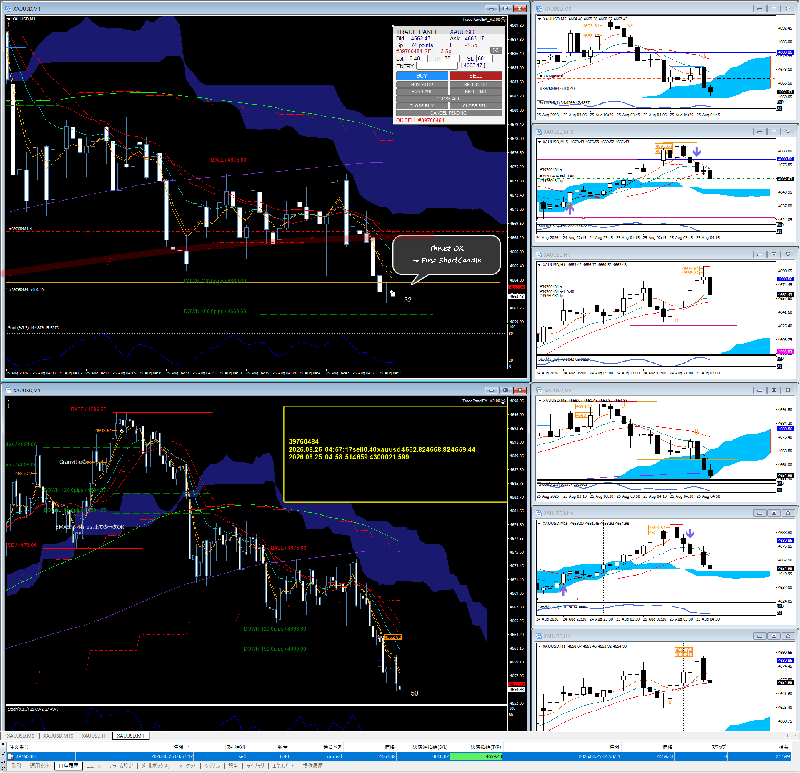

{kind=link}

PUBLIC PREVIEW / 公開版
RoboMei Interpretation / RoboMei解釈版
Scalping
Thrustから勢いを獲る。
G Scal は、形成されたトレンドの天井から底まで全てを取り切ることを目的としません。State Judge のあと Thrust を認定し、Tradeable になってから ENTRY を構築します。基本的には、ほぼ STANDARD STATE。BIG STATE は、ほぼ重要指標がメインです。
STANDARD STATE通常相場/
BIG STATE大きく動く特殊相場
G SCALGスキャル
OVERVIEW全体像
OVERVIEW全体像
RoboMei Interpretation / RoboMei解釈版 の全体像。
G Scal は State Judge から始まる。基本的には、ほぼ STANDARD STATE。BIG STATE は、ほぼ重要指標がメイン。現在の相場を STANDARD STATE または BIG STATE として扱ったあと、Thrust Judge で Tradeable かどうかを見る。BIG STATE と STANDARD STATE は完全に別の Trading Logic ではない。
STATE JUDGE相場状態の判定
XAUUSD TARGETXAUUSD特化
TP / LC specifications are for XAUUSD.
TP / LC仕様はXAUUSDに特化。
STANDARD STATE通常相場
Original: TP 30 / LC 60
RoboMei: TP 35 / LC 60
RoboMei: TP 35 / LC 60
BIG STATE大きく動く特殊相場
TP 60 / LC 100
参考元である加藤ムネヒサ氏は State Judge を ○ / × として説明している。RoboMei Interpretation では、指標等による特殊な State を BIG STATE として扱い、それ以外の大半を STANDARD STATE として扱う。指標なら必ず Big State、という機械的な断定はしない。
STATE相場状態
State によって切り替えるのは TP / LC。
共通する基本思想は同じ。State Judge → Thrust認定 → Tradeable → 乖離 → 乖離埋め → Granville Chance → ENTRY。切り替えるのは TP / LC の設定。基本的には、ほぼ Standard State。Big State は、ほぼ重要指標がメイン。
STANDARD STATE通常相場
XAUUSD TARGETXAUUSD特化
TP35
LC60
元ロジック: TP 30 / LC 60
本サイト RoboMei: TP 35 / LC 60
TPのみ 35 へ変更。基本的には、ほぼ Standard State。
TP / LC仕様はXAUUSDに特化。
BIG STATE大きく動く特殊相場
XAUUSD TARGETXAUUSD特化
TP60
LC100
ほぼ重要指標がメイン。現在公開する詳細 Logic。下の BIG STATE 本文へ続く。
TP / LC仕様はXAUUSDに特化。
同じ Core Logic を使う。
State によって全く別のロジックを使う、という構造ではない。
STATE JUDGE相場状態の判定→
THRUST一方向への強い値動き→
TRADEABLEトレード可能→
KAIRI乖離→
FILL乖離埋め→
GRANVILLE CHANCEグランビル・チャンス→
ENTRYエントリー
THRUST一方向への強い値動き
Thrust は Tradeable Judge。
Thrust は単なる値動きの名称ではない。RoboMei が「トレード可能な State になった」と認定する Judge。Thrust 認定の前に ENTRY を探しにいかない。流れは STATE JUDGE → THRUST JUDGE → THRUST認定 → TRADEABLE。
REFERENCE参考基準
参考としている基本
- EMA13
- Not Touch
- SIZE
- 150 pips
加藤ムネヒサ氏の正確な定義として断定する文章ではない。RoboMei が参考としている基本。
ROBO MEI
INTERPRETATIONRoboMei解釈
- WICK TOUCHヒゲ接触
- EMA13へのヒゲ程度の接触は、場合により許容することがある。
- THRUST GUIDEThrust認定の目安
- およそ 100–120 pips 程度から、Thrust 認定候補として見る。
100 pips = 自動認定、ではない。100–120 pips は REFERENCE / GUIDE / 目安。
BASIC LOGIC基本ロジック
基本ロジック
Thrustから勢いを獲る。環境認識を含めた STEP 01〜05。
01
SMA20 BREAK
M1 SMA20 Break後、下落せずThrust形成。ここからThrustを見る。
DETAIL / 詳細を見る ↓
02
ENVIRONMENT / 環境認識
Direction + Formation + Resistance & Support
DETAIL / 詳細を見る ↓
03
THRUST
+120pipsは、Thrustの長さ＝勢いを見る視認目安。
DETAIL / 詳細を見る ↓
04
RETRACE
Thrust中にM1で押し目が出る。
DETAIL / 詳細を見る ↓
05
ENTRY
そのM1の押し目を Retrace ENTRY としてENTRYする。
DETAIL / 詳細を見る ↓
ENVIRONMENT RECOGNITION / 環境認識
ENTRYを探す前に、上位の状況を確認しておく。方向だけではない。
| CHECK | 確認内容 |
|---|---|
| DIRECTION / 方向 | M1・M5・M15 SMA20の方向 / Perfect Order |
| FORMATION | 上位で形成されているFormation |
| RESISTANCE & SUPPORT | 上位のResistance / Supportの位置 |
→
上位の状況を確認
→
Thrust形成
→
M1 Retraceを探す
Thrustから勢いを獲る。
REAL ENTRY CASES実チャートENTRY集
実チャートで学ぶ
このロジックは、実チャートでの視認を身につけてもらうことを重視する。基本ロジックを実チャートで確認するための Sample を掲載する。画像クリックで拡大表示できる。
ROBO MEI STYLERoboMeiのトレードスタイル
得意技：チキン利確
「また利確したあと走った……」
それでもいい。これは RoboMei 自身の Trading Style。チキン利確が正しい、という一般論ではない。G Scal はトレンド全部を取り切ることを目的にしない。Thrustから勢いを獲る。
ROBO MEI TRADING SETUPRoboMeiのトレード環境
判断と操作を分ける。
筆者は ENTRY / EXIT 操作を簡単にするため、専用 EA を使用している。EA の役割は ENTRY 操作と EXIT 操作を簡単にすること。
JUDGE裁量判断RoboMei
EXECUTION注文・決済操作Simple ENTRY / EXIT EAENTRY・EXIT操作用EA
State Judge / Thrust Judge / Granville Judge / ENTRY Judge を EA が自動判定している、という説明ではない。
BIG STATE大きく動く特殊相場
現在公開する詳細 Logic。
ここから下は既存の BIG STATE 本文。大きな値動きを追わない。次のENTRY Pointが形成されるまで待つ。
00 / DEFINE定義
Big Stateを認定する。
経済指標が発表されたこと自体をBig Stateとはしません。発表直後の乱高下を経て、実体Candleによる明確なThrustを確認したところから判定を開始します。
BIG STATE大きく動く特殊相場
実体Candleによって明確なThrustが確認された相場状態。
THRUST一方向への強い値動き
実体Candleによる方向性の明確な値動き。
KAIRI / 乖離
CandleとEMA5/6、EMA13、SMA20等との価格差。
乖離埋め
Thrustで生じた乖離を解消する方向への戻し。
GRANVILLE CHANCEグランビル・チャンス
乖離をShortCandle形成によって埋めに掛かる局面。次のENTRY構築の起点。
BIG RESISTANCE
前日高安値・上位足MA200等、Thrust進行を一時的に止め得る強い節目。
価格・Candle・MAは、市場参加者の判断と注文の結果として現れた「観測材料」です。
01 / CYCLEサイクル
ENTRYではなく、サイクルを見る。
一つの形を暗記するのではなく、現在のChartがサイクルのどこにいるかを先に判断します。
THRUST一方向への強い値動き方向発生
KAIRI乖離乖離拡大
FILL乖離埋め乖離埋め
GRANVILLEグランビル・チャンスShortCandle
ENTRYエントリー判定
RE-THRUST再Thrust再進行
WAIT待機次のChance
02 / CORE基本ロジック
ENTRYを探す「3つの問い」。
未知のChartでも、ShortCandleが形成されるたびに同じ3問を問い直します。
QUESTION 01問い
Thrustはどちら方向か？
実体CandleによるThrustが確認できていなければENTRY判定へ進みません。
QUESTION 02問い
今はサイクルのどこか？
- 乖離拡大中 → 追わない
- 乖離埋め中 → 観察
- Granville形成 → ENTRY判定へ
QUESTION 03問い
ShortCandleとMAの位置関係は？
- 乖離解消済みか
- EMA13 Resistance / Supportか
- EMA5/6を再び踏んだか
- Perfect Order再形成か
行き過ぎたThrustを追わない。
CandleがMAから大きく乖離したらWAIT。進行方向のBig Resistance / Supportを確認し、停止 → 戻し → 乖離埋め → 次のGranville Chanceを観察します。反発したことだけを理由に逆方向ENTRYとはしません。
03 / ENTRYエントリー
ENTRY Pointは条件の組み合わせで策定する。
次の条件は排他的ではありません。複数が重なる場合も、Perfect Order完成前にENTRYを策定する場合もあります。
A乖離埋め
ShortCandle / CrossCandleのShadowを含め、CandleとMAとの乖離が解消されたかを見る。
CrossCandleという名称より「乖離が埋まったか」。
BEMA13 Resistance / Support
乖離埋めの先でEMA13等がResistance / Supportとして機能し、ShortCandleを形成。
EMA5/6の一時逆行だけでThrust否定とはしない。
CEMA5/6へ再び戻る
早いENTRYを見送った場合、EMA5/6を再びThrust方向へ踏む局面まで待つ。
次のGranville Chanceまで待つ選択。
DPerfect Order再形成
短期・中期・長期MAがThrust方向へ再び整列し、ShortCandle形成が重なる。
唯一の必須条件にはしない。
04 / FLOW判断フロー
未知のChartで使う判定フロー。
01実体Thrust?NO → WAIT / YES → Big State
02方向は?UP → BUY側 / DOWN → SELL側
03大きく乖離?YESなら追わない。
04Big Resistance?停止・反発を織り込む。
05乖離埋め?MAへの引きつけを観察。
06Short / Cross?MAとの位置関係を見る。
07ENTRY策定?乖離解消／EMA13／EMA5/6／PO。
08再乖離?追わず次のGranvilleへ。
05 / CASE実例
Jackson Hole 2026｜適用例
2026/08/28 23:00 JPT。ここは普遍ロジック（UNIVERSAL LOGIC / 共通ロジック）とは分離し、上記の判断を実際のChartへ適用した CASE STUDY / 適用例、APPLICATION EXAMPLE / 適用例 として扱います。
CASE STUDY適用例
@Down Thrust後のCrossCandle。Shadowを含めEMA5/6との乖離解消を判断。
A乖離埋め完了。Thrust方向維持を前提にENTRY候補。
★EMA13 Resistance + ShortCandle。Granville Chance形成。
BSMA20 Touch後、Big Bear Candleで戻り上昇を否定。Descending Triangleを観察。
実例の「場所」をコピーしない。
次のBig Stateで探すのは同じ座標ではありません。①Thrust方向、②現在地、③ShortCandleとMAの位置関係を、その場のChartへ問い直します。
最終的に覚えるのは「3つだけ」。
Thrustの方向を決める。現在地を決める。ShortCandleとMAの位置関係から、次のThrustが始まり得るENTRY Pointを策定する。
PRACTICAL ENTRY実戦ENTRY判断
XAUUSD M1 Thrust
実戦ENTRY判断
環境認識 → ENTRY → 見送り → 再ENTRY
01
Thrustを認識するTHRUST / 一方向への強い値動き
M1 SMA20 Break を Thrust 計測開始の目安とする。起点から 120 pips Over を基本目安とする。ただし、120 pips を厳密な固定値とはしない。120 pips 近辺でも、EMA13 Not Touch が継続していれば Thrust が形成されている場合がある。
01
M1 SMA20 BreakTHRUST START / Thrust計測開始
02
EMA13 Not Touch継続を見る
03
約120 pips以上基本目安。厳密な固定値ではない
04
THRUST ENVIRONMENTThrust環境120 pips は ENTRY 地点ではない
120 pips 到達 = 自動ENTRY、ではない。
追いかけない。
なるべくEMA側へ引き付けてENTRYする。
なるべくEMA側へ引き付けてENTRYする。
Thrustが120pips近辺まで伸びた後、そのまま価格を追いかけるのではなく、なるべくEMA側へ価格を引き付けてENTRYを詰める。
ENTRY 1エントリー
M1 Short Candle
→
Thrust
→
EMA付近まで戻る
→
M1 Short Candle形成
→
Candle確定
→
ENTRY
Thrust後、EMA付近まで戻り、M1 Short Candle形成、Candle確定を確認してENTRY。
ENTRY 1.2エントリー
EMA13 Touch
条件が良い場合は、EMA13 Touch その瞬間をENTRYとして扱う。
EMA13 Touchなら必ずENTRY、ではない。
ENTRY 2エントリー
EMAとの乖離が大きい場合
乖離しているなら追わない。
→
価格とEMAの乖離が大きい
→
Candleを1本待つ
→
M1 Candle確定
→
ENTRY判断
02
見送りを検討するSKIP
ENTRY条件だけを見て機械的にENTRYしない。
A
クモ
ENTRY方向の近距離にクモがある。特に、ENTRY後すぐクモへ衝突する位置関係では見送り候補。
B
D1 Line
ENTRY方向のすぐ近くに D1 Line がある場合、D1 Lineまでの距離を確認して見送りを検討。
C
Trend累計値幅
Trend開始地点から累計 約500 pips まで進むと、Trendが終了するケースが多い。TREND START / Trend開始地点 → CURRENT PRICE / 現在価格 を確認する。500pips近辺では新規ENTRYを慎重に判断する。
500pips = 強制終了、ではない。
CANDLE
Candleの進み方も見る
M1 Candleが一方向へ素直に連続せず、上昇Candleと下降Candleが混在し、一気にENTRY方向へ進まない状態では見送りを検討する。陰陽混在。
陰陽混在 = ENTRY禁止、ではない。
03
一度見送っても、ENTRYできる場合がある。RE-ENTRY
ENTRY方向に、サポレジ / 上位足MA が存在する場合、一旦は見送り候補。
01
そのLevelを抜ける
02
戻る
03
M1 Candleで再びENTRY方向へ動く
04
ENTRY候補
見送り ≠ そのTrendの終了
その形になれば、ENTRYできる場合がある。
REAL CASE準備中
参考画像 2026-08-27_14h44_23.png は、現時点では Repository に未配置。将来 FXDB から実例を追加する。
まだ機械判定にはしない。
現時点では、以下を自動判定条件として固定しない。
- 120pips近辺
- なるべくEMAへ引き付ける
- EMAとの乖離感
- クモ / D1 Lineまでの距離
- Trend累計500pips近辺
- Candleの陰陽混在
これらは、実トレードとFXDBの事例を蓄積しながら、境界を確認していく対象。
REAL CASES実戦事例
FXDB実例準備中
将来、FXDBから実例を追加する枠組み。今回は掲載しない。
BASIC LOGIC DETAIL基本ロジック詳細
基本ロジック詳細
上部は一覧。ここは各STEPの意味を理解するための詳細。
M1 SMA20をまたぐBreak後、下落せずThrust形成。ここからThrustを見る。
↑ 基本ロジックへ戻るENTRYを探す前に、上位の状況を確認しておく。方向だけではなく、Formation、Resistance、Support を含めて確認する。
| CHECK | 確認内容 |
|---|---|
| 01｜DIRECTION / 方向 | M1 SMA20 / M5 SMA20 / M15 SMA20。各時間軸の方向を確認。同調 ＝ Perfect Order |
| 02｜FORMATION / Formation | 上位で形成されている Formation を確認しておく。 |
| 03｜RESISTANCE & SUPPORT | 上位の Resistance / Support の位置を確認しておく。 |
→
上位の状況を確認
→
Thrust形成
→
M1 Retraceを探す
Formationの種類、Resistance / Support の具体的な判定条件は、今回は新しく定義しない。
↑ 基本ロジックへ戻るThrust中に、EMA6、EMA13、SMA20 が Perfect Order になっていることが多い。
Thrustの長さ＝勢いを見るため、Trend元から AutoLineTool で +120pips 先に Line を引いておく。
120pipsは、機械的なThrust認定条件ではない。Thrustの長さ＝勢いを視認するための目安。
また、EMA13 Not Touch が繰り返されている場合、Thrustとしての確度が高くなる。
↑ 基本ロジックへ戻るThrust中にM1で押し目が出る。
確認する形: 初のM1 ShortCandle、または M1前回高値を超えられない ShortCandle。
ShortCandleは、前足が進んで生じた乖離を埋めるために形成することが多い。
REAL CHART 01 実チャートで確認 ↓ ↑ 基本ロジックへ戻るここがENTRY判断。
→
M1で押し目が出た
→
その「位置」を見る
→
長さと勢いを EMA13 Not Touch でJudge
→
Thrust認定
→
Retrace ENTRY
ShortCandleが出たから機械的にENTRYするのではない。押し目が形成された位置で、それまでの Thrustの長さと勢い を確認する。Judge材料は EMA13 Not Touch。長さ + 勢い + EMA13 Not Touch を見ながら Thrustを認定する。EMA13 Not Touch を単独の自動認定条件にはしない。逆に見れば、初のShortCandleが形成された時点で、そこまでの値動きを見て「Thrust」と思ったならGO。
→
THRUST LENGTH / MOMENTUM長さ・勢い
→
EMA13 NOT TOUCHでJudge
→
THRUST認定
→
RETRACE ENTRY